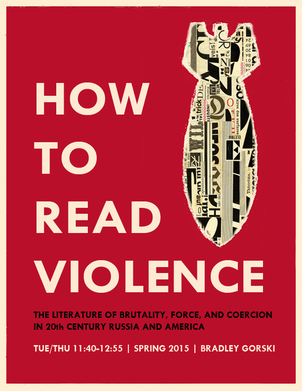

Courses Taught
The Undead
I've taught this class a couple of times as a first-year
seminar, once at Barnard (fall 2017) and once at Georgetown (fall 2021). We
start with burial and the belief in immortality in world cultures and then we move
on to ghosts, vampires, and zombies, as our three species of the undead. Finally,
we look at contemporary memorials and memory politics as they reflect our views of life
after death and the ability of the living to conjure the dead. I've taught this as a
world culture or comparative culture course. I'm currently developing a version built on
Russian material.
How to Read Violence

I've taught this class a few times, twice as an upper-level undergraduate (at Columbia and Barnard) and
once as a first-year writing seminar (at Georgetown). We pay special attention to violence as a problem of
representation as well as a social and ethical issue. The course is divided into four themes: Revolutionary
Violence, the Violence of Development, the Violence in the System, and Aestheticized Violence.
Post-Colonial / Post-Socialist
A geographically expansive view of Soviet and post-Soviet literature,
reaching beyond the traditional centers of cultural production to invite
voices and perspectives from across what the Soviets touted as “one-sixth
of the world.” By critically examining such claims of a unified cultural
and political space, this course views the Soviet Union and Russia as
multi-national, multi-ethnic entities, continuously resistant to monolithic
definitions, readings, and interpretations. As we encounter authors from
the Caucasus, Central Asia, and Siberia, we examine the colonial legacy of
the Russian empire and the Soviet Union in the context of global postcolonial
theory. We ask how Russia’s imperial experience differed ideologically and
practically from that of other empires throughout history, and how these
differences are reflected in the postcolonial practices of contemporary authors.
The Future is Red (White and Blue)
Subtitled "Modernity and Social Justice in the U.S. and U.S.S.R., 1920s–1960s,"
this course follows travellers from each of the two emerging world powers as they
travel to the other. What they discover there is an alternative vision of modernity,
one that is at once attractive and also antithetical to the one developing at home. Travelers
include Langston Hughes, Ilya Ilf and Evgeny Petrov, Vladimir Mayakovsky, Louise Bryant,
W.E.B. DuBois, Margaret Bourke-White, Audre Lourde, and John Steinbeck.
Post-Soviet Russia
Taught as a First-Year Writing Seminar at Vanderbilt University in fall 2018.
From the end of history to the annexation of Crimea and beyond.
Russian Cinema
Starting with Evgenyi Bauer and ending in the present. Silent films,
the avant-garde, Vertov, Eisenstein, Tarkovsky, Muratova,
late-Soviet mass cinema, Balabanov, Zvyagintsev. I loved teaching this
course. I packed in way too many movies (22!), but the students seemed to love it.
Theses Advised
|
2024
|
Emily Gorny. “Americanization and Adaptation: Analyzing Hybrid Identities in the
Storytelling of Soviet American Émigrés.” Bachelor’s Thesis. Department of Slavic Languages,
Georgetown University.
|
|
2024
|
Aileen Flanery. “Consumer Kitsch in the Brezhnev Era.” Master’s Capstone.
MAERES/CERES, Georgetown University.
|
|
2023
|
Bailey Aguilar. “The Suess/Nabokov Nexus.” Master’s Capstone.
MAERES/CERES, Georgetown University.
|
|
2022
|
Orest Mahlay. “The Russian Language and Ukrainian Political Affiliation.”
Bachelor’s Thesis. Department of Slavic Languages, Georgetown University.
|
|
2021
|
(with Elena Boudovskaia) Carl Tulevech. “Certain
Features of Lemko Dialect in a Polish Village.” Bachelor’s Thesis.
Department of Slavic Languages, Georgetown University.
|
|
2018
|
Veniamin Gushchin. “Pushkin in the 20th Century: Lunacharsky, Nabokov,
Tertz.” Bachelor’s Thesis. Department of Comparative Literature and Society, Columbia University.
|
|
2018
|
Maria Matilde Morales. “Vladimir Mayakovsky in 1960s Venezuela:
Miguel Otero Silva’s novel When I Want to Cry I Don’t.” Bachelor’s
Thesis. Department of Comparative Literature and Society, Columbia University.
|
|
2017
|
Alfred Benjamin Rosenbluth. “How the Soviet Body was Decayed: The
Exorcism of Soviet Subjectivity in Necrorealism.” Master’s Thesis.
Department of Slavic Languages and Literatures, Columbia University.
|